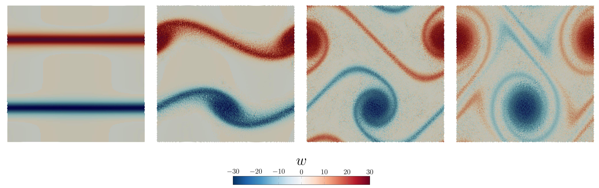

Example 4: Double Shear Layer
In this setup, borrowed from this paper, we consider a periodic domain and an initial velocity field
$u = \tanh\left(\xi \left(y - \frac{1}{4}\right) \right), \quad y < \frac{1}{2}$
$u = \tanh\left(\xi \left(\frac{3}{4} - y\right) \right), \quad y \geq \frac{1}{2}$
$v = \delta \sin(2 \pi x)$
with $\delta = 0.05$, $\xi = 30$, with constant initial density $\rho_0 = 1$, viscosity $\mu = 2E-4$ and pressure $P_0 = \frac{1}{\gamma}.$ These conditions generate an interesting flow pattern, which is essentially a Kelvin-Helmholtz instability. The problem relies on a periodic boundary condition which must be specified in the VoronoiGrid constructor.
module doubleshear
include("../src/LagrangianVoronoi.jl")
using .LagrangianVoronoi, LinearAlgebra, Polyester
const rho0 = 1.0
const xlims = (0.0, 1.0)
const ylims = (0.0, 1.0)
const mu = 2e-4
const dr = 1e-2
const gamma = 1.4
const P0 = 100.0/gamma
const delta = 0.05
const xi = 30.0
const v_char = 2.0
const dt = 0.1*dr/v_char
const t_end = 1.8
const export_path = "results/doubleshear"
const nframes = 100
function ic!(p::VoronoiPolygon)
p.v = v_init(p.x)
p.rho = rho0
p.mass = p.rho*area(p)
p.P = P0
p.e = 0.5*norm_squared(p.v) + p.P/(p.rho*(gamma - 1.0))
p.mu = mu
end
function v_init(x::RealVector)::RealVector
u = (x[2] <= 0.5) ? tanh(xi*(x[2] - 0.25)) : tanh(xi*(0.75 - x[2]))
v = delta*sin(2pi*x[1])
return RealVector(u,v)
endIn this example, we would like to compute vorticity. Unfortunately, the predefined Navier-Stokes polygon is not equipped with a vorticity field. However, we can create our custom type PolygonWithVorticity and perform all computations with it.
@kwdef mutable struct PolygonWithVorticity <: VoronoiPolygon
@fluid_variables # all standard variables
vort::Float64 = 0.0 # vorticity
end
const GridWithVorticity = VoronoiGrid{PolygonWithVorticity}
mutable struct Simulation <: SimulationWorkspace
grid::GridWithVorticity
solver::PressureSolver{PolygonWithVorticity}
E::Float64
S::Float64
E0::Float64
S0::Float64
first_step::Bool
Simulation() = begin
domain = Rectangle(xlims = xlims, ylims = ylims)
grid = GridWithVorticity(domain, dr, xperiodic = true, yperiodic = true) # the domain is periodic both horizontally and vertically
populate_lloyd!(grid, ic! = ic!)
solver = PressureSolver(grid)
return new(grid, solver, 0.0, 0.0, 0.0, 0.0, true)
end
endWe need to define a custom function for vorticity evaluation. The vorticity can be evauluated using moving least squares. (Also known as "linear reconstruction" in some circles.) This is not the only way how vorticity can be approximated.
function get_vort!(grid::GridWithVorticity)
@batch for p in grid.polygons
gradu = movingls(LinearExpansion, grid, p, p -> p.v[1])
gradv = movingls(LinearExpansion, grid, p, p -> p.v[2])
p.vort = gradv[1] - gradu[2]
end
endThe remainder of the script is as usual.
function step!(sim::Simulation, t::Float64)
move!(sim.grid, dt)
ideal_eos!(sim.grid, gamma)
find_pressure!(sim.solver, dt)
pressure_step!(sim.grid, dt)
find_D!(sim.grid)
viscous_step!(sim.grid, dt)
find_dv!(sim.grid, dt)
relaxation_step!(sim.grid, dt)
return
end
function postproc!(sim::Simulation, t::Float64)
get_vort!(sim.grid)
@show t
grid = sim.grid
sim.E = 0.0
sim.S = 0.0
for p in grid.polygons
sim.E += p.mass*p.e
sim.S += p.mass*(log(abs(p.P/P0)) - gamma*log(abs(p.rho/rho0)))
end
if sim.first_step
sim.E0 = sim.E
sim.S0 = sim.S
sim.first_step = false
end
sim.E -= sim.E0
sim.S -= sim.S0
@show sim.E
@show sim.S
println()
return
end
function main()
sim = Simulation()
run!(sim, dt, t_end, step!;
postproc! = postproc!,
nframes = nframes,
path = export_path,
save_csv = false,
save_points = true,
save_grid = true,
vtp_vars = (:P, :v, :rho, :vort)
)
end
if abspath(PROGRAM_FILE) == @__FILE__
main()
end
endThis page was generated using Literate.jl.